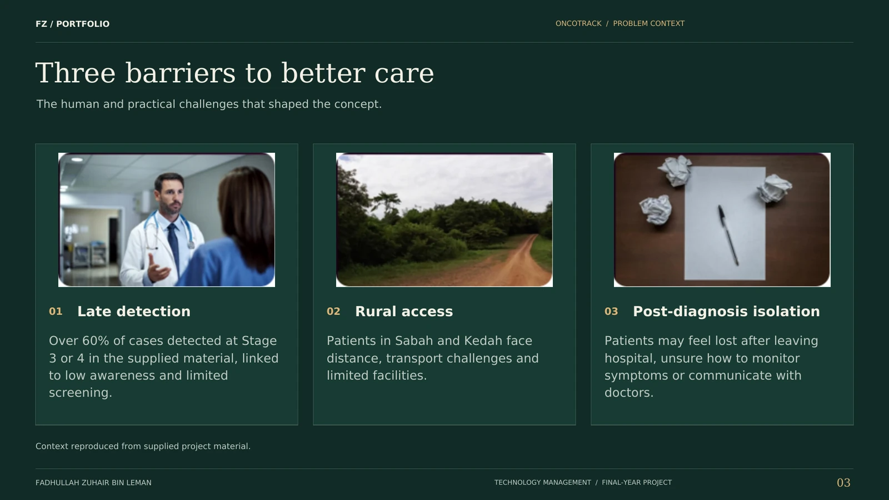
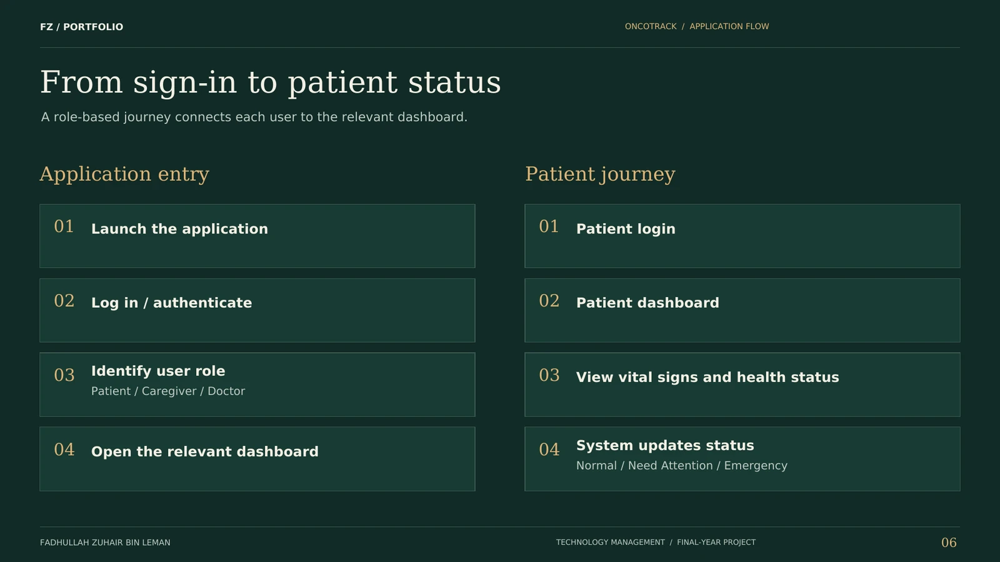
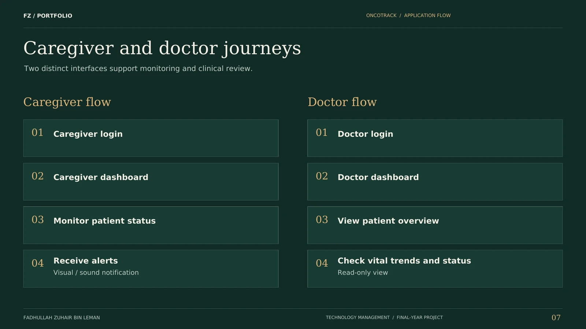
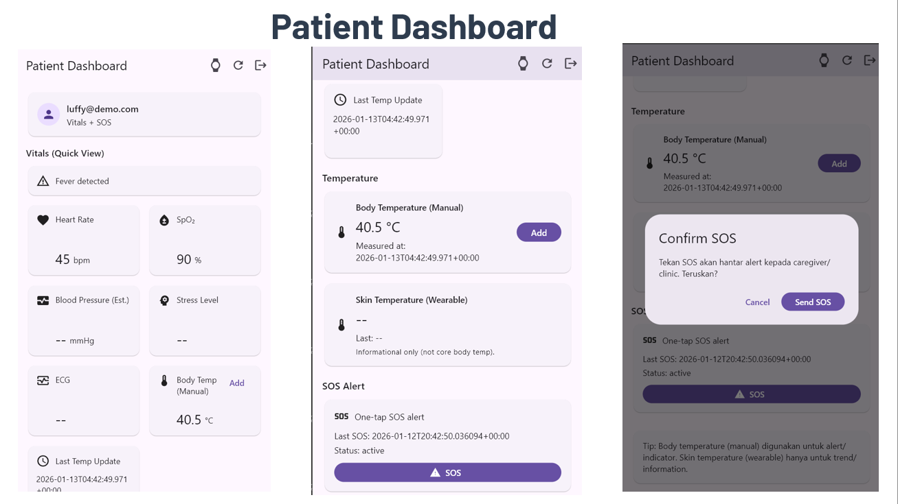
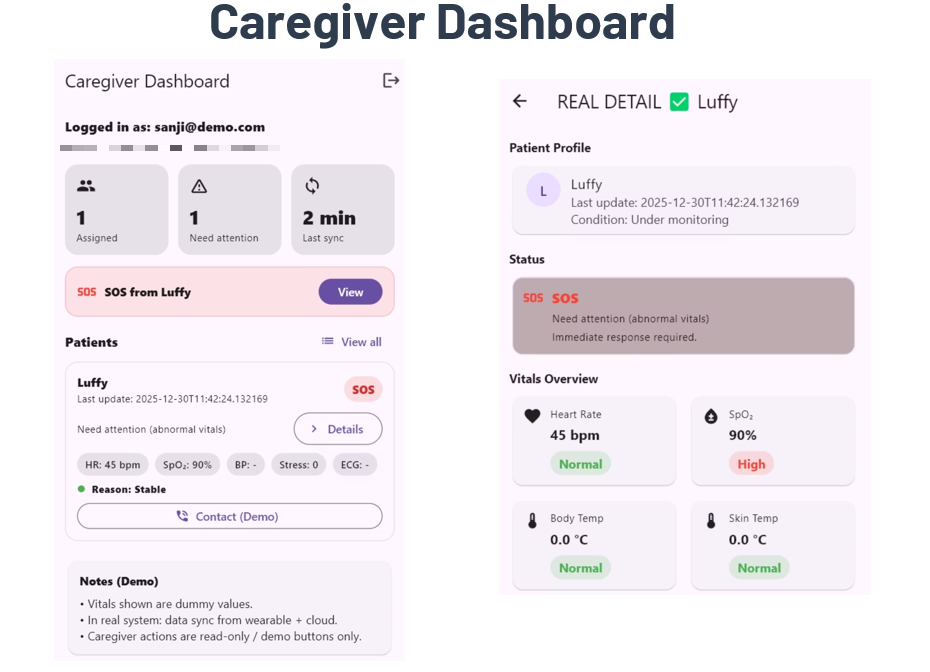
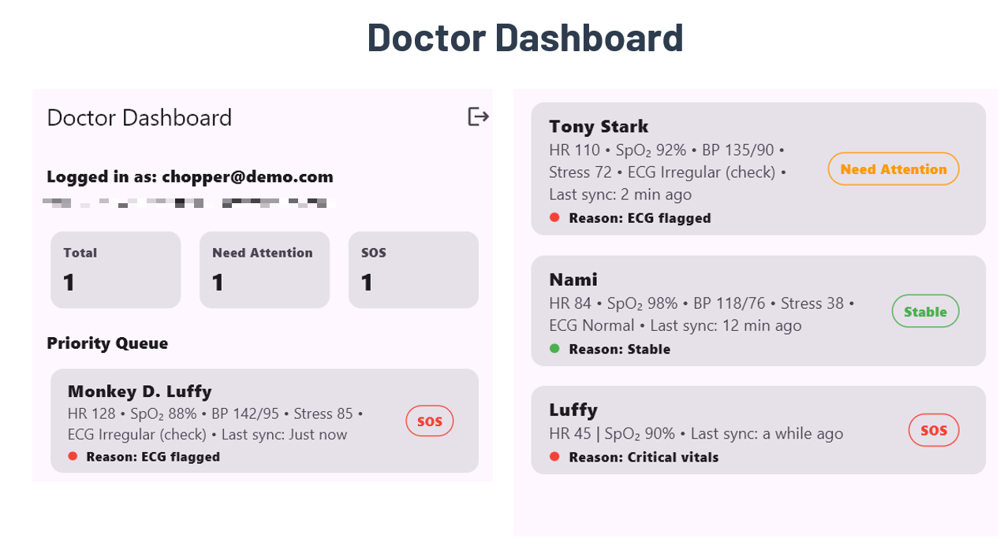
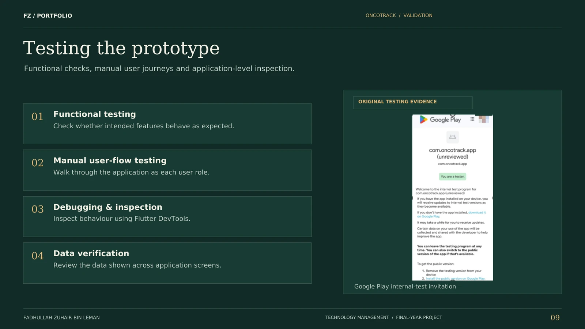
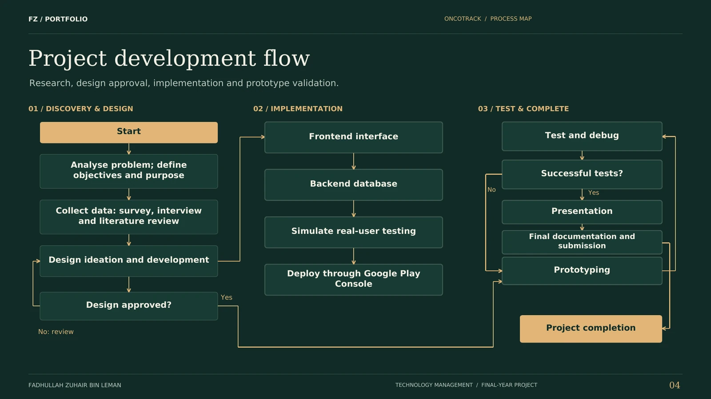
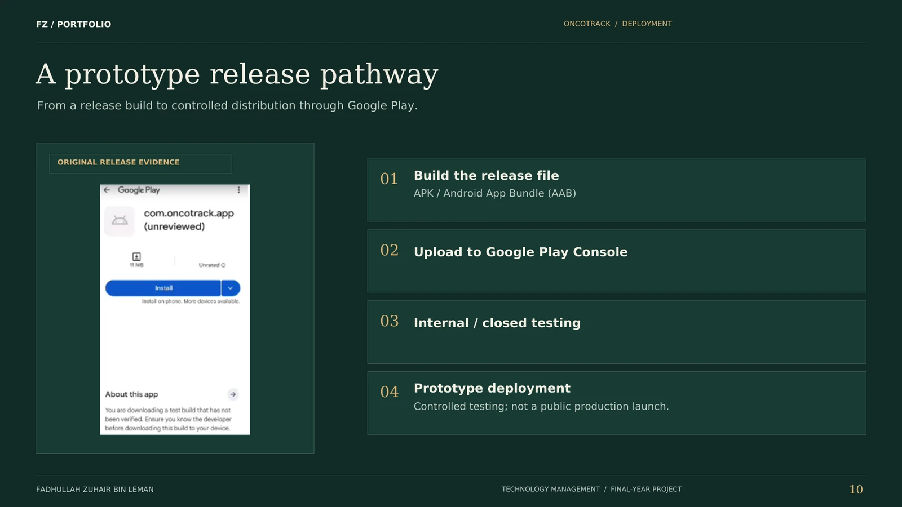

OncoTrack
A mobile health-monitoring prototype for cancer care, with separate patient, caregiver and doctor dashboards and one-tap SOS.Prototaip pemantauan kesihatan mudah alih untuk penjagaan kanser, dengan dashboard pesakit, penjaga dan doktor yang berasingan serta SOS satu tekan.
PurposeTujuan
A final-year project for cancer care at home, where late detection, post-diagnosis confusion and distance from hospitals are common. The app puts the same readings in front of patients, caregivers and doctors, each with only the detail they need.Projek tahun akhir untuk penjagaan kanser di rumah, di mana pengesanan lewat, kekeliruan selepas diagnosis dan jarak dari hospital adalah perkara biasa. App ini memaparkan bacaan yang sama kepada pesakit, penjaga dan doktor, masing-masing dengan butiran yang diperlukan sahaja.

Research behind itKajian di sebalik app
I interviewed a senior oncologist at a government hospital (semi-structured, about 30 minutes). Basic monitoring helps track treatment and symptoms, caregivers carry much of the monitoring at home, and patients far from hospitals need remote support. A survey added numbers:Saya menemu bual seorang pakar onkologi kanan di hospital kerajaan (separa berstruktur, kira-kira 30 minit). Pemantauan asas membantu menjejak rawatan dan simptom, penjaga memikul banyak tugas pemantauan di rumah, dan pesakit yang jauh dari hospital perlukan sokongan jarak jauh. Kaji selidik menambah angka:
of survey respondents were willing to use a health appresponden kaji selidik sanggup guna app kesihatan
were confused about what to do after diagnosiskeliru tentang langkah selepas diagnosis
had forgotten appointmentspernah terlupa temu janji
One app, three viewsSatu app, tiga paparan
The role is stored on each user’s profile. After sign-in (email or Google) the app opens the matching dashboard, and new accounts start as patients.Peranan disimpan pada profil setiap pengguna. Selepas log masuk (emel atau Google), app membuka dashboard yang sepadan, dan akaun baharu bermula sebagai pesakit.
PatientPesakit
Sees their own dashboard with heart rate, SpO₂ and steps from a paired smartwatch, and can log body temperature by hand. A one-tap SOS button asks for confirmation, then records the event for caregivers and the clinic.Melihat dashboard sendiri dengan kadar jantung, SpO₂ dan langkah dari smartwatch, dan boleh rekod suhu badan secara manual. Butang SOS satu tekan meminta pengesahan, kemudian merekod kejadian untuk penjaga dan klinik.
CaregiverPenjaga
Gets a patient list with live updates. Anyone who needs attention is flagged, an alarm sound plays, and a detail page shows the readings behind the flag.Mendapat senarai pesakit dengan kemas kini langsung. Pesakit yang perlu perhatian ditandakan, bunyi penggera dimainkan, dan halaman butiran menunjukkan bacaan di sebalik tanda itu.
DoctorDoktor
Opens on a priority queue with each patient marked Stable, Need Attention or SOS, then drills into a fuller overview for review.Bermula dengan baris keutamaan, setiap pesakit ditanda Stable, Need Attention atau SOS, kemudian masuk ke paparan lebih lengkap untuk semakan.


ScreensSkrin
Demo accounts and sample patients, not real patient data.Akaun demo dan pesakit contoh, bukan data pesakit sebenar.



How the data movesAliran data
Heart rate, SpO₂ and steps are read from the phone through Android Health Connect. Each reading is saved to Supabase, the latest snapshot is updated per user, and the dashboards listen for changes so caregivers see updates without refreshing. Tables cover profiles, vitals, readings and SOS events.Kadar jantung, SpO₂ dan langkah dibaca dari telefon melalui Android Health Connect. Setiap bacaan disimpan ke Supabase, snapshot terkini dikemas kini bagi setiap pengguna, dan dashboard mendengar perubahan supaya penjaga nampak kemas kini tanpa refresh. Jadual meliputi profil, vitals, bacaan dan kejadian SOS.
Alert rulesPeraturan amaran
A patient is flagged as needing attention when SpO₂ drops below 92 or average heart rate goes above 120. An ECG-style “Irregular (check)” label comes from the same two rules, and stress of 70 or more shows as high stress. These are demo rules for the prototype and not a diagnosis.Pesakit ditandakan perlu perhatian apabila SpO₂ jatuh bawah 92 atau purata kadar jantung melebihi 120. Label “Irregular (check)” gaya ECG datang daripada dua peraturan yang sama, dan stres 70 ke atas dipaparkan sebagai stres tinggi. Ini peraturan demo untuk prototaip dan bukan diagnosis.
My contributionSumbangan saya
Requirements analysis, interface planning in Figma and Uizard, system design, and the Flutter and Supabase build, including the role routing, the Health Connect sync and the alert logic.Analisis keperluan, perancangan antara muka dalam Figma dan Uizard, reka bentuk sistem, serta pembangunan Flutter dan Supabase, termasuk routing peranan, sync Health Connect dan logik amaran.
Design decisionKeputusan reka bentuk
A caregiver needs a quick answer to “who needs me now?”, so the first screen shows status and a flag, and the readings sit one tap deeper.Penjaga perlu jawapan pantas kepada “siapa perlukan saya sekarang?”, jadi skrin pertama menunjukkan status dan tanda, dan bacaan berada satu tekanan lebih dalam.
Process and testingProses dan ujian
Planning in FYP1 (problem, literature review, objectives), then interface design, the backend build, manual user-flow testing with Flutter DevTools and data checks. A test build went through Google Play Console internal testing, shown below. It was never a public launch.Perancangan dalam FYP1 (masalah, tinjauan literatur, objektif), kemudian reka bentuk antara muka, pembangunan backend, ujian aliran pengguna manual dengan Flutter DevTools dan semakan data. Satu test build melalui ujian dalaman Google Play Console, seperti ditunjukkan di bawah. Ia tidak pernah dilancarkan kepada umum.



Prototype boundariesBatasan prototaip
This is an academic prototype and has not been clinically validated. The report treats real smartwatch integration as future work, even though the Health Connect sync is written in the code. Blood pressure, stress and ECG values are estimates, the screenshots use demo accounts, and it has not been tested with real patients.Ini prototaip akademik dan belum disahkan secara klinikal. Laporan menganggap integrasi smartwatch sebenar sebagai kerja masa depan, walaupun sync Health Connect sudah ditulis dalam kod. Nilai tekanan darah, stres dan ECG ialah anggaran, screenshot guna akaun demo, dan app belum diuji dengan pesakit sebenar.